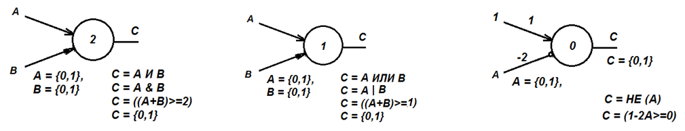
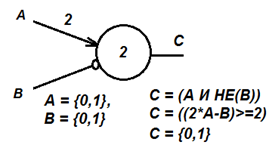
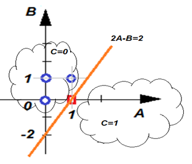

|
Лекция 39.
|

| X1 | X2 | Y |
|---|---|---|
| 0 | 0 | 1 |
| 0 | 1 | 1 |
| 1 | 0 | 1 |
| 1 | 1 | 1 |
Например, рассчитаем выходной сигнал и состояние нейрона Y при входных сигналах X1=1, X2=1 имеем: S-h=(-1)*1+2*1-(-1)=2, Y=one(S-h)=one(2)=1. Нейрон возбуждён.
При входных сигналах X1=0, X2=1 имеем: S-h=(-1)*0+2*1-(-1)=1, Y=one(S-h)= one(3)=1.
При входных сигналах X1=1, X2=0 имеем: S-h=(-1)*1+2*0-(-1)=0, Y=one(S-h)=one(0)=1. (Единичная функция возвращает при нулевом аргументе единицу).
При входных сигналах X1=0, X2=0 имеем: S-h=(-1)*0+2*0-(-1)=1, Y=one(S-h) =one(1)=1.
Видно, что порог h здесь настолько низок, что пропускает все комбинации сигналов, проходящие через нейрон. Логическая функция нейрона, которую он реализует при h=-1: Y=1 (нейрон всегда возбужден, независимо от входных сигналов), такой нейрон может служить в нейросетях генератором сигналов. В этом случае его называют спонтанно активным нейроном.
Просчитаем реакции нейрона при различных значениях величины порога нейрона h.
| X1 | X2 | Y |
|---|---|---|
| 0 | 0 | 1 |
| 0 | 1 | 1 |
| 1 | 0 | 0 |
| 1 | 1 | 1 |
Логическая функция нейрона при h=0: Y=НЕ (x1) ИЛИ x2. Заметим, что логическая функция изменилась, реализуется операция ИЛИ.
| X1 | X2 | Y |
|---|---|---|
| 0 | 0 | 0 |
| 0 | 1 | 1 |
| 1 | 0 | 0 |
| 1 | 1 | 1 |
Логическая функция нейрона при h=1: Y= x2. Заметим, выход Y повторяет один из входов Х2.
| X1 | X2 | Y |
|---|---|---|
| 0 | 0 | 0 |
| 0 | 1 | 1 |
| 1 | 0 | 0 |
| 1 | 1 | 0 |
Логическая функция нейрона при h=2: Y= НЕ (x1) И x2. Заметим, что функция нейрона сменилась на логику И.
| X1 | X2 | Y |
|---|---|---|
| 0 | 0 | 0 |
| 0 | 1 | 0 |
| 1 | 0 | 0 |
| 1 | 1 | 0 |
Логическая функция нейрона при h=3: Y= 0. Заметим, что в данном случае выход Y тождественно равен нулю. Нейрон закрыт всегда и никакие комбинации сигналов через себя не пропускает.
Анализируя таблицы, можно увидеть, что с увеличением значения величины порога
| Порог h | Функция Y=one(S-h) | Комментарий |
|---|---|---|
| <= -1 | Y= 1 | Нейрон возбуждён всегда, генератор сигналов |
| 0 | Y=НЕ (x1) ИЛИ x2 | Функция «ИЛИ» |
| 1 | Y= x2 | Нейтральная функция «повторитель» |
| 2 | Y= НЕ (x1) И x2 | Функция «И» |
| >=3 | Y= 0 | Нейрон всегда заперт, тупик, ловушка для сигналов |
Вывод. В зависимости от уровня порога h нейрон может менять логику работы: от мягкой до жёсткой, от ИЛИ до И, от «открыто всегда» до «закрыто всегда».
В процессе работы (познания окружающего нас мира) мозг меняет значения порогов нейронов, управляет весами связей, меняет свою логику, то есть правила работы, реакции на мир. Мозг, меняя правила, обучается, находит способ правильно реагировать на окружающую среду. Мозг строит модель. Модель «находится» в связях нейронов k и имеет вид уравнений-неравенств. Логика – это связи. Знания – это связи. В биологическом смысле, это означает, что во время обучения у нас вырастают или отмирают, усиливаются или ослабляются аксоны – связи между нейронами, сеть перестраивается. Уравнения задают границы областей, неравенства задают области в многомерном пространстве рецепторов, то есть переменных X.
Как всегда, создадим конструктор из элементов, помогающий нам строить сложные системы. Это три типовых нейрона, каждый из которых реализует логическую схему. Первый - И, второй - ИЛИ, третий - НЕ. А как известно из комбинации этих функций можно собрать любую логическую статическую сложную функцию.
- Нейрон с функцией «И»: С=A&B, C = (A+B-2>=0) = one(A+B-2)
- Нейрон с функцией «ИЛИ»: C=A|B, C = (A+B-1>=0) = one(A+B-1)
- Нейрон с функцией «НЕ»: C=?A, C = (1-2A>=0) = one(-2A+1)
- Любую логическую функцию можно представить комбинацией функций И-ИЛИ-НЕ, соединённых последовательно или/и параллельно.
- Любая логическая функция может быть представлена алгебраическим неравенством (равенством), иногда достаточно сложным.
- Любая алгебраическая система равенств (неравенств) может быть изображена геометрически как некоторое тело в пространстве переменных (рецепторов).
- Любая база статических данных может быть представлена логической функцией в пространстве атрибутов-рецепторов {0,1}.
- Любая база статических данных может быть представлена как в виде нейронной сети, так и в виде математической модели или геометрического образа

Например, для нейрона с двумя входами А и В с весами kA=2 и kB=-1 и порогом h=2 логическая функция и математическая модель нейрона будет: C=A&НЕ(B) = (2*A-B-2>=0) = one(2*A-B-2).
| A | B | C | |
|---|---|---|---|
| A | 0 | 0 | 2 |
| B | 0 | 0 | -1 |
| C | 0 | 0 | 0 |
| h | 0 | 0 | -2 |

| A | B | С=A&НЕ(B) | С=(2А-В>=2) |
|---|---|---|---|
| 0 | 0 | 0 | 0 |
| 0 | 1 | 0 | 0 |
| 1 | 0 | 1 | 1 |
| 1 | 1 | 0 | 0 |

Геометрическая иллюстрация:
- оси координат – рецепторы А и В,
- шкала осей координат - значения рецепторов 0 и 1,
- уравнение нейрона в виде разделяющего правила - прямой линии 2А-В=2,
- две полуплоскости С=1 (нейрон возбуждён, правило выполнено, 2А-В >=2) и С=0 (нейрон спит, правило не выполнено, 2А-В <2),
- каждая точка плоскости АОВ с координатами (А, В) соответствует строке таблицы истинности (нейрон спит С=0, нейрон возбуждён С=1),
- один нейрон – одна прямая линия, делящая пространство рецепторов на две области (две полуплоскости).
Задания
- Загрузите с сайта упражнения «Единичная функция Хэвисайда» и «Логика нейрона». В процессе эксперимента с моделью нейрона постройте его таблицу истинности и математическую модель. Логика нейрона генерируется в упражнении многократно случайным образом кнопкой «Снова».
Презентация:
| Лекция 38. Нейроны. Что это такое? Первое знакомство | Лекция 40. Нейроны. Построение нейронной сети вручную | ||||||||||||||||
|
|||||||||||||||||